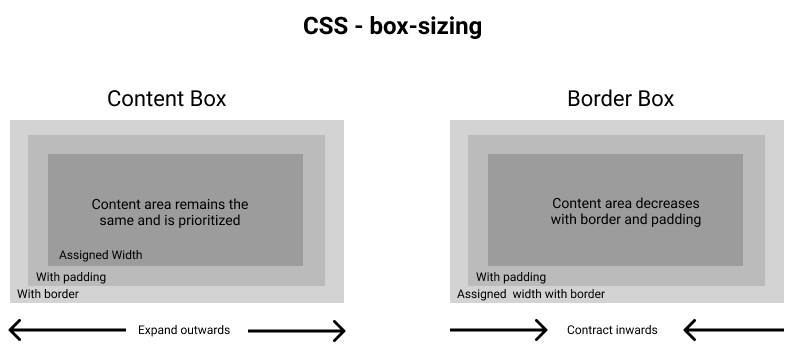

-
Beskriv boxmodellen och ge en kort förklaring av var och en av de CSS-egenskaper som ingår i den.
Box modellen är i huvudsak en ruta som omsluter varje HTML-element. Den består av: marginaler, kanter, utfyllnad och det faktiska innehållet.
- Innehåll: Innehållet i rutan, där text och bilder visas.
- Utfyllnad:Rensar ett område runt innehållet. Utfyllnaden är genomskinlig.
- Kanter:En kant som går runt stoppningen och innehållet.
- Marginal:Rensar ett område utanför gränsen. Marginalen är transparent.

-
Beskriv också skillnaden mellan värdena content-box och border-box för CSS-egenskapen box-sizing.
Egenskapen box-sizing definierar hur bredden och höjden på ett element beräknas: ska de inkludera utfyllnad och kanter eller inte
content-box: I detta inkluderar egenskaperna bredd och höjd (och min/max egenskaper) endast innehållet. Kanter och utfyllnad ingår ej.
border-box: : I detta inkluderar egenskaperna bredd och höjd (och min/max egenskaper) innehåll, utfyllnad och kanter. - 